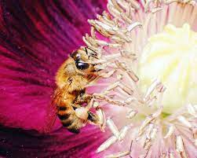
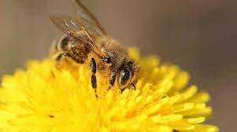
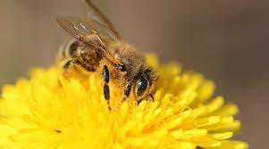

| Info. | Vinc | |
|---|---|---|
1. CULTIVATING A BEE-FRIENDLY GARDENPlant a variety of flowers and plants in your garden to give bees access to nectar in the spring. Bees love traditional garden or wildflowers, such as primrose, buddleia and marigolds. If you can, leave part of the garden untended; some bees love long grass or nesting in compost piles. |
||
 |
2. TREAT THE BEES TO SOME SUGAR AND LET THEM "BEE".Mix two teaspoons of granulated white sugar with one teaspoon of water and put it in a dish or drop it on a flower to revive a tired bee. Be sure to always use granulated white sugar instead of another type of sugar. |
|
3. Do not use chemicals for bees.Avoid using pesticides and herbicides. Pesticides, fertilizers and herbicides are harmful to bees and wreak havoc on their sensitive systems. If you must use them, choose a specific organic product, and always avoid applying pesticides when flowers are blooming or directly on the ground. |
||
|  | 4. CONSUME SUSTAINABLE HONEYMake sure honey is local, from beekeepers who practice sustainability. In agriculture, harmful chemicals are often used to eliminate pests from the environment. Bees can pick up these insecticides when they pollinate and carry them back to the hive. Causing the decline of bee populations and can even get into the honey we eat. |
|
 
